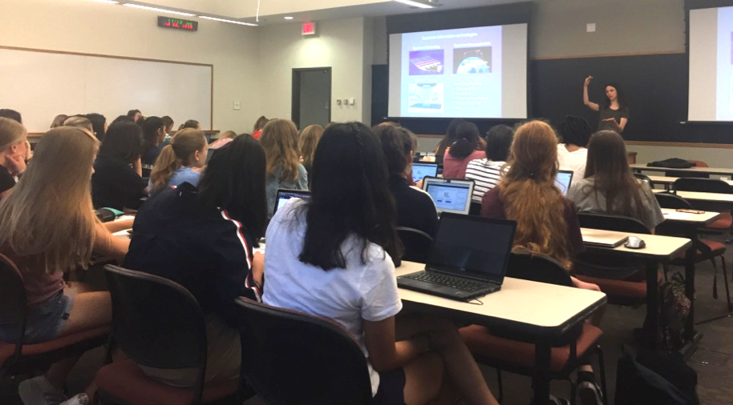

VTQ Outreach
Registration for the summer school is now open!
Annual VTQ High-school Summer School
Summer schools play an important role in recruiting and educating students, while also offering a valuable means to develop community and science identity. While several QISE summer schools are offered at the graduate level and mostly focus on physics students, the annual VTQ High-School Summer School targets earlier education levels and a wider student pool spanning multiple disciplines. This summer school, which first launched in Summer 2021, is a four-day virtual event that covers a range of topics within QISE, including superposition, entanglement, quantum gates and circuits, quantum teleportation, quantum algorithms such as Deutsch-Josza and Grover’s search algorithm, and more. Students gain familiarity with these topics by working through a series of pen-and-paper exercises using a pictorial formalism first introduced by Prof. Terry Rudolph in his popular book Q is for Quantum. Students also use cloud quantum processors and simulators made available by IBM to work through problems. More details about the summer school and the topics covered using the pictorial formalism can be found in this arXiv preprint and also in our preprint on Hello Quantum World!. In addition to students, the event is also open to high-school teachers and other interested parties looking to gain a hands-on understanding of basic QISE concepts.